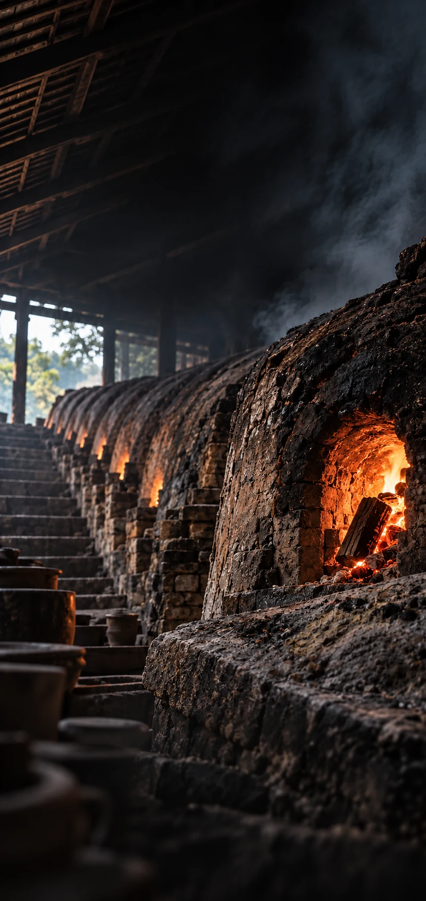

南风古灶 · 窑格我的旅程
五百年柴烧 · 南风古灶
重生到古灶
你会干哪行？
看看你更像古灶里的哪一行。
本测试为文化娱乐互动体验，并非心理学诊断。
‹窑性测试01 / 15
火候 · 泥性还在这一窑里
Q 01
朋友临出门突然说：
“要不换个地方？”
答案只影响你自己的窑格，不显示对错。
A行啊，哪里都可以。
B可以换，但你现在马上定。
C为什么换？原计划挺好的。
D不换，已经安排好了，出发。
‹ 上一题已作答 1 / 15下一题 ›
南风古灶 · 窑格正在合窑
火
正在看你的火候
正在试你的泥性
正在为你开灶
‹你的窑格火种 01
灶系 · 行当原型
装灶匠
还没开始，你已经排完了。
火势
泥性
手路
行会
成器
灶法
‹南风窑令火种 01
装灶匠专属游程带着窑性
带着窑性
逛一程
去找真实的窑火与陶。
轻游约 20 分钟
标准约 40 分钟
深游约 60 分钟
0 / 3任务完成
0 / 8火点到访
01枚火种
‹任务详情火种 01
南风古灶 · 寻找
找一只火眼
窑背上的小孔叫火眼。到南风古灶附近，找到一只火眼，想想师傅为什么要从那里观察火势。
◉ 按现场“南风古灶”标识前往
确认你已到达
请在现场找到这个火点，再领取到访火种。
留下一句观察
你找到了什么细节？
‹南风窑令火种 01
沿着窑火走
八个火点
内容导览，不是实时导航。实际位置请看景区现场标识。
01
南风古灶五百年柴烧
›02
高灶龙窑与民俗
›03
火神敬畏火候
›04
古灶神榕树与窑相伴
›05
林家厅岭南生活空间
›06
大缸瀑布陶业与日用器
›07
拉坯体验手上有陶
›08
石湾微塑一个表情的距离
›‹八个火点已到访 01
五百年柴烧
南风古灶
沿着龙窑看火眼、窑背与烧制过程，读懂一窑柴火如何慢慢成器。
明代正德年间柴烧三日火睇火
这一处的任务
找一只火眼›
看一遍三日火›
‹南风窑令开灶条件
当前火种01 / 07
○ 到访 3 个火点
○ 完成 3 项任务
○ 收集 7 枚火种
○ 完成 3 项任务
○ 收集 7 枚火种
南风古灶 · 窑格这一窑已成
南风窑格NO. 0418A7
装灶匠
06火点到访
07收集火种
03完成任务
‹返回窑格本机旅程
灶系 · 行当原型我的窑令
装灶匠 · 这一窑还在继续
01枚火种
00项任务
00处火点
走过的火点
南风古灶五百年柴烧
未到访高灶龙窑与民俗
未到访拉坯体验手上有陶
未到访石湾微塑一个表情的距离
未到访